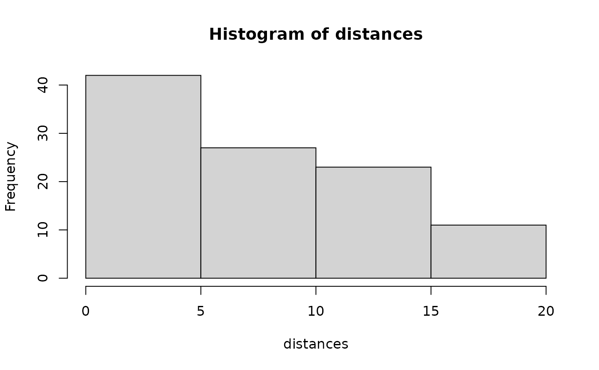
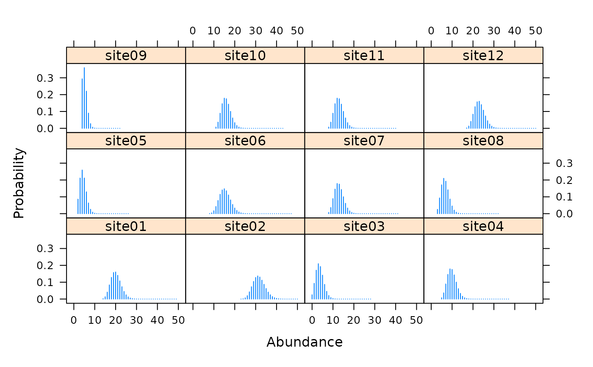

distsamp.RdFit the hierarchical distance sampling model of Royle et al. (2004) to line or point transect data recorded in discrete distance intervals.
distsamp(formula, data, keyfun=c("halfnorm", "exp", "hazard", "uniform"), output=c("density", "abund"), unitsOut=c("ha", "kmsq"), starts, method="BFGS", se=TRUE, engine=c("C", "R", "TMB"), rel.tol=0.001, ...)
| formula | Double right-hand formula describing detection covariates followed by abundance covariates. ~1 ~1 would be a null model. |
|---|---|
| data | object of class |
| keyfun | One of the following detection functions: "halfnorm", "hazard", "exp", or "uniform." See details. |
| output | Model either "density" or "abund" |
| unitsOut | Units of density. Either "ha" or "kmsq" for hectares and square kilometers, respectively. |
| starts | Vector of starting values for parameters. |
| method | Optimization method used by |
| se | logical specifying whether or not to compute standard errors. |
| engine | Use code written in C++ or R |
| rel.tol | Requested relative accuracy of the integral, see
|
| ... | Additional arguments to optim, such as lower and upper bounds |
Unlike conventional distance sampling, which uses the 'conditional on detection' likelihood formulation, this model is based upon the unconditional likelihood and allows for modeling both abundance and detection function parameters.
The latent transect-level abundance distribution
\(f(N | \mathbf{\theta})\) assumed to be
Poisson with mean \(\lambda\) (but see gdistsamp
for alternatives).
The detection process is modeled as multinomial: \(y_{ij} \sim Multinomial(N_i, \pi_{ij})\), where \(\pi_{ij}\) is the multinomial cell probability for transect i in distance class j. These are computed based upon a detection function \(g(x | \mathbf{\sigma})\), such as the half-normal, negative exponential, or hazard rate.
Parameters \(\lambda\) and \(\sigma\) can be vectors affected by transect-specific covariates using the log link.
unmarkedFitDS object (child class of unmarkedFit-class)
describing the model fit.
You cannot use obsCovs.
Richard Chandler rbchan@uga.edu
Royle, J. A., D. K. Dawson, and S. Bates (2004) Modeling abundance effects in distance sampling. Ecology 85, pp. 1591-1597.
Sillett, S. and Chandler, R.B. and Royle, J.A. and Kery, M. and Morrison, S.A. In Press. Hierarchical distance sampling models to estimate population size and habitat-specific abundance of an island endemic. Ecological Applications
unmarkedFrameDS,
unmarkedFit-class fitList,
formatDistData, parboot,
sight2perpdist, detFuns,
gdistsamp, ranef.
Also look at vignette("distsamp").
## Line transect examples data(linetran) ltUMF <- with(linetran, { unmarkedFrameDS(y = cbind(dc1, dc2, dc3, dc4), siteCovs = data.frame(Length, area, habitat), dist.breaks = c(0, 5, 10, 15, 20), tlength = linetran$Length * 1000, survey = "line", unitsIn = "m") }) ltUMF#> Data frame representation of unmarkedFrame object. #> y.1 y.2 y.3 y.4 Length area habitat #> 1 3 6 5 0 5 5.953128 A #> 2 8 5 6 4 7 4.523539 A #> 3 0 0 0 0 3 5.812511 A #> 4 2 1 1 1 4 5.929066 A #> 5 0 2 0 0 2 5.039786 A #> 6 4 1 2 1 6 3.872571 A #> 7 3 3 2 0 4 3.890749 B #> 8 1 2 0 0 3 6.246779 B #> 9 2 1 0 1 1 6.813926 B #> 10 6 0 3 2 4 4.323164 B #> 11 5 1 2 0 4 7.059182 B #> 12 8 5 2 2 5 4.752804 B#> unmarkedFrameDS Object #> #> line-transect survey design #> Distance class cutpoints (m): 0 5 10 15 20 #> #> 12 sites #> Maximum number of distance classes per site: 4 #> Mean number of distance classes per site: 4 #> Sites with at least one detection: 11 #> #> Tabulation of y observations: #> 0 1 2 3 4 5 6 8 #> 14 9 10 4 2 4 3 2 #> #> Site-level covariates: #> Length area habitat #> Min. :1 Min. :3.873 A:6 #> 1st Qu.:3 1st Qu.:4.473 B:6 #> Median :4 Median :5.426 #> Mean :4 Mean :5.351 #> 3rd Qu.:5 3rd Qu.:6.027 #> Max. :7 Max. :7.059# Half-normal detection function. Density output (log scale). No covariates. (fm1 <- distsamp(~ 1 ~ 1, ltUMF))#> #> Call: #> distsamp(formula = ~1 ~ 1, data = ltUMF) #> #> Density: #> Estimate SE z P(>|z|) #> -0.171 0.134 -1.28 0.201 #> #> Detection: #> Estimate SE z P(>|z|) #> 2.39 0.127 18.7 2.46e-78 #> #> AIC: 164.7524#> #> Call: #> distsamp(formula = ~1 ~ 1, data = ltUMF) #> #> Density (log-scale): #> Estimate SE z P(>|z|) #> -0.171 0.134 -1.28 0.201 #> #> Detection (log-scale): #> Estimate SE z P(>|z|) #> 2.39 0.127 18.7 2.46e-78 #> #> AIC: 164.7524 #> Number of sites: 12 #> optim convergence code: 0 #> optim iterations: 30 #> Bootstrap iterations: 0 #> #> Survey design: line-transect #> Detection function: halfnorm #> UnitsIn: m #> UnitsOut: ha #>#> Backtransformed linear combination(s) of Density estimate(s) #> #> Estimate SE LinComb (Intercept) #> 0.843 0.113 -0.171 1 #> #> Transformation: exp#> lam(Int) #> 0.8427749#> Backtransformed linear combination(s) of Detection estimate(s) #> #> Estimate SE LinComb (Intercept) #> 10.9 1.38 2.39 1 #> #> Transformation: exp#> [1] 12.7523# Detection probability eshw / 20 # 20 is strip-width#> [1] 0.6376152# Halfnormal. Covariates affecting both density and and detection. (fm2 <- distsamp(~area + habitat ~ habitat, ltUMF))#> #> Call: #> distsamp(formula = ~area + habitat ~ habitat, data = ltUMF) #> #> Density: #> Estimate SE z P(>|z|) #> (Intercept) -0.376 0.191 -1.97 0.0490 #> habitatB 0.439 0.266 1.65 0.0992 #> #> Detection: #> Estimate SE z P(>|z|) #> (Intercept) 3.091 0.5111 6.05 1.47e-09 #> area -0.110 0.0884 -1.24 2.14e-01 #> habitatB -0.271 0.2711 -1.00 3.17e-01 #> #> AIC: 166.456# Hazard-rate detection function. (fm3 <- distsamp(~ 1 ~ 1, ltUMF, keyfun="hazard"))#> #> Call: #> distsamp(formula = ~1 ~ 1, data = ltUMF, keyfun = "hazard") #> #> Density: #> Estimate SE z P(>|z|) #> -0.119 0.219 -0.546 0.585 #> #> Detection: #> Estimate SE z P(>|z|) #> 2.13 0.433 4.91 9.34e-07 #> #> Hazard-rate(scale): #> Estimate SE z P(>|z|) #> 0.315 0.543 0.58 0.562 #> #> AIC: 167.0218# Plot detection function. fmhz.shape <- exp(coef(fm3, type="det")) fmhz.scale <- exp(coef(fm3, type="scale")) plot(function(x) gxhaz(x, shape=fmhz.shape, scale=fmhz.scale), 0, 25, xlab="Distance (m)", ylab="Detection probability")## Point transect examples # Analysis of the Island Scrub-jay data. # See Sillett et al. (In press) data(issj) str(issj)#> 'data.frame': 307 obs. of 8 variables: #> $ issj[0-100] : int 0 0 0 0 0 0 0 0 0 0 ... #> $ issj(100-200]: int 0 0 0 0 0 0 0 0 0 0 ... #> $ issj(200-300]: int 2 0 0 0 0 0 0 0 0 0 ... #> $ x : num 234870 237083 235732 237605 234239 ... #> $ y : num 3767154 3766804 3766717 3766719 3766570 ... #> $ elevation : num 51.4 156.9 144.8 184.3 111.4 ... #> $ forest : num 0.022054 0.006731 0.016182 0.257626 0.000716 ... #> $ chaparral : num 0.242 0.466 0.769 0.206 0 ...jayumf <- unmarkedFrameDS(y=as.matrix(issj[,1:3]), siteCovs=data.frame(scale(issj[,c("elevation","forest","chaparral")])), dist.breaks=c(0,100,200,300), unitsIn="m", survey="point") (fm1jay <- distsamp(~chaparral ~chaparral, jayumf))#> #> Call: #> distsamp(formula = ~chaparral ~ chaparral, data = jayumf) #> #> Density: #> Estimate SE z P(>|z|) #> (Intercept) -2.799 0.160 -17.55 6.02e-69 #> chaparral 0.912 0.145 6.31 2.82e-10 #> #> Detection: #> Estimate SE z P(>|z|) #> (Intercept) 4.729 0.0840 56.27 0.000000 #> chaparral -0.249 0.0739 -3.36 0.000772 #> #> AIC: 969.9142if (FALSE) { data(pointtran) ptUMF <- with(pointtran, { unmarkedFrameDS(y = cbind(dc1, dc2, dc3, dc4, dc5), siteCovs = data.frame(area, habitat), dist.breaks = seq(0, 25, by=5), survey = "point", unitsIn = "m") }) # Half-normal. (fmp1 <- distsamp(~ 1 ~ 1, ptUMF)) hist(fmp1, ylim=c(0, 0.07), xlab="Distance (m)") # effective radius sig <- exp(coef(fmp1, type="det")) ea <- 2*pi * integrate(grhn, 0, 25, sigma=sig)$value # effective area sqrt(ea / pi) # effective radius # detection probability ea / (pi*25^2) }